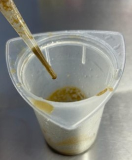
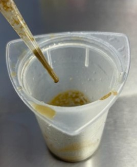

Guía parasitaria de Helmintos, con muestras de rumiantes de la UTN sede Atenas
Flotación fecal


Se procedió a pesar 10 gramos de heces, los cuales luego fueron macerado en 100 ml de agua con la ayuda de una paleta.
Luego se procedió a pasar la mezcla por un colador para evitar el exceso de material, así como se muestra en las imágenes. El líquido filtrado se dejó reposar durante una hora.
Pasada la hora se decantó el sobrante y se conservó el sedimento del fondo del recipiente. Solo se conservó el sedimento y el resto se descartó. Al sedimento se le agregaron de nuevo 100 ml de agua y se dejó reposar de nuevo durante una hora.
 

Se pudo observar como el líquido se aclaró cada vez más y el sedimento se hizo más visible. Se volvió a decantar el sobrante y con la ayuda de una pipeta se recolectó un poco del sedimento. Se colocaron unas gotas en un portaobjetos, para luego poner el cubre objetos y se llevó al microscopio.